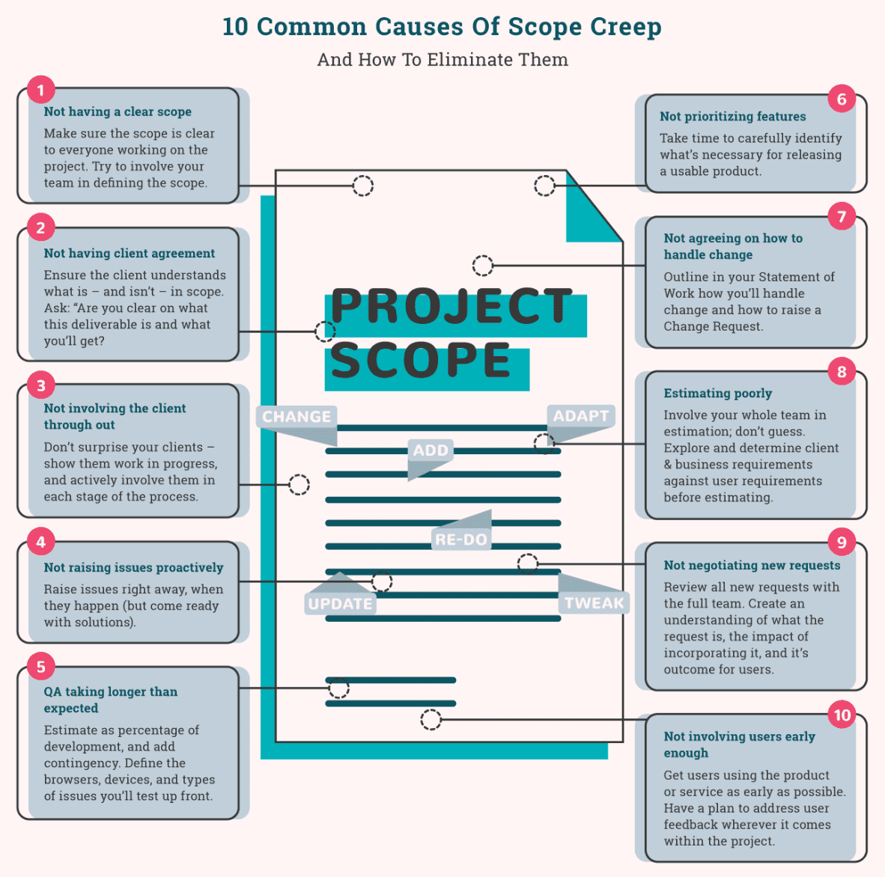

Scope management was briefly discussed in the project management planning chapter. Here, we will go more in depth.
Scope planning is where you define exactly what you a building, the objectives it will meet, and the quality it will be among other things. This gives the project its focus and evaluation criteria for meeting the customers needs. As the Project Management Institute (2000) notes, "scope planning is the process of progressively elaborating and documenting the project work (project scope) that produces the product of the project. Project scope planning starts with the initial inputs of product description, the project charter, and the initial definition of constraints and assumptions. Note that the product description incorporates product requirements that reflect agreed-upon customer needs and the product design that meets the product requirements. The outputs of scope planning are the scope statement and scope management plan, with the supporting detail. The scope statement forms the basis for an agreement between the project and the project customer by identifying both the project objectives and the project deliverables." (p. 55)
In a project context, scope may refer to two things:
"A project generally results in a single product, but that product may include subsidiary components, each with its own separate but interdpeendent product scopes. For example, a new telephone system would generally include four subsidiary components--hardware, software, training, and implementation." (PMI, p. 51)
Project scope planning is a vital management practice for planning and delivering successful projects. There are six processes within scope management and they are: plan scope management, collect requirements, define scope, create Work Breakdown Structure (WBS), validate scope, and control scope. The goal in part is to understand what the deliverables are precisely. This entails having clearly defined results, goods, or services produced during the project or at its outcome. As a part of this process, a document called a statement of work is usually created. This statement of work expresses an integrated set of purposes, goal descriptions, resource requirements, known conflicts, assumptions made, and authorities that define a project and accompany the evolving master project plan during its development throughout the project.
Learn more about statements of work in the project management planning chapter.
In project initiation the company authorizes the project or phase. One of the first things that needs to be done is an assessment. The company and project team should take into consideration the profitability, time to market, development needs, and commercial viability and compare that to other potential projects. It may be best to start out with an idea generation or brainstorming session. Next the company and project team should assess the overall feasibility, risk, and desirability of each project. Consider the degree to which each project fulfills overall company goals and objectives. After all, your primary objective is to help the company fulfill its overall mission, goals, and objectives through implementation of your project. Common reasons for initiating a new project include: market demand, business need, customer request, technological advance, legal requirement, or social need.
For the Grandeur View Bitters company, for example, the original objective was to successfully implement an LLC for academic learning purposes as well as to ascertain if a new aromatic bitters company might find a niche that would move it beyond being a recreational hobby. For it to be deemed a success the company would have to successfully get off the ground with limited costs and a likely positive cost-benefit ratio for the future. Once the LLC was established and funcitoning, the objective began to also include making a profit and scaling as well.
Once a project has been initiated it is important that the team establish general goals, expectations, and understood measurable objectives. It is also good to clarify terminology. Generally speaking, goals are loosely defined whereas objectives are well defined and measurable. Saying something like “Grow our customer base” is a general goal, whereas “increase the number of purchasing customers by 10% over the next 6 months” is a measurable objective. Ensure there is agreement across the team regarding the meaning and interpretation of both goals and objectives once they are defined and clarify as necessary. All team members should be able to come to the same conclusion if asked at any point if an objective has been met; there should not be ambiguity. Understand as well that some companies use different terminology and consider goals to be measurable. Finally, discuss expectations of the project and of all stakeholders including individual team members. Ensure you are starting on common ground so there is not confusion, disagreement, or disappointment later on in the project.
To develop goals and expectations as a group, one method is to make a broad list of all the project's goals and expectations (brainstorming may be good here), then remove anything that has no direct bearing on the project. Next, debate about those things that might or might not have direct bearing on the project until agreement is reached. Eliminate anything that is not a goal for the end result of the project. Assess if it is feasible to accomplish all of the goals in one project. If not, hone the list–perhaps doing "phases" or a step approach, each treated as a separate project and each with very clear boundaries established.
By definition are “outcome statements that define what an organization is trying to accomplish
both programmatically and organizationally” (The Nature of Goals, n.d.).
Goals are usually:
After the goals are identified you can then think in terms of what you want to accomplish within each goal in the next three to five years. Here are some steps in establishing goals and expectations:
By definition objectives are described as being very precise, time-based, and measurable. They are actions that support the completion of a goal. Measurable objectives state who is involved, the desired outcomes, how progress will be measured, and when the outcome should occur. When identifying who is involved it should include the people whose behaviors, knowledge, and/or skills are to be changed as a result of the program. For the desired outcome it should inclued the intended behavior, knowledge, and/or skill changes that should result from the program or activities. Measurement of progress specifies w
hat tool or device (surveys, tests, data from other sources) will be used to measure the expected changes. Remember you need to ensure that your department has the resources/capacity (time, staff, funding, etc.) to perform the measurement. A proficiency level should be specified that identifies criteria for success. And lastly, an objective should identify the time frame for success (North Carolina Medical Society, n.d.).
Objectives must:
Six criteria for good project objectives:
During this phase you will want to create and have approved a project charter. A project charter is a document that formally authorizes the project. It should include information about business need and product description. It should be issued by a manager external to the project, and at a level appropriate to the needs of the project. It provides the project manager with the authority to apply organizational resources to project activities. See the project management planning chapter to learn more about developing a project charter.
Outcomes from scope planning should include a scope statement. A scope statement provides a documented basis for making future project decisions and for confirming or developing common understanding of project scope among stakeholders.
Scope definition starts by defining and agreeing upon major project deliverables. Next, scope definition subdivides major project deliverables into smaller, more manageable components. Outcomes from scope planning should include a scope statement. The written scope statement identifies both the project deliverables and project objectives. It provides a documented basis for confirming or developing common understanding of project scope among the stakeholders. Once it is developed it is the basis of agreement between the customer, the project team, and any suppliers. It is the basis for all project related decisions. It will also be used for scope change control and to determine whether a project has been successfully completed.
The scope statement should include the following information:
The scope statement should be reviewed and approved by the project sponsor. The scope statement also should be approved by the customer although the customer’s version of the scope statement may not contain some information such as any supplier confidential information. Remember, a scope statement provides a documented basis for making future project decisions and for confirming or developing common understanding of project scope among stakeholders.
As Eastwood (2019) aptly summarizes, a strong project scope statement has several key characteristics. It should:
Eastwood also offers great recommendations on eight steps to making a scope statement:
View this sample technology related project scope statement template from California State University Channel Islands.
Scope creep is adding additional features or functions of a new product, requirements, or work that is not authorized (i.e., beyond the agreed-upon scope) without addressing the effects on time, costs, and resources, or without customer approval. (Larsen & Larsen, 2009). The key to this is not authorized. As Larsen and Larsen note, "The work to incorporate these changes must usually be done within the original time and budget estimates, leaving less time for approved parts of the scope."

(Haworth, 2018)
A work breakdown structure (WBS) is a division of all of the work necessary to complete a project. It is arranged in a hierarchy and is constructed with clear and logical groupings, most often by activity types or deliverables. It should represent the work identified in an approved project scope statement. A WBS is the foundation for effective scheduling and cost estimating. It is a means to collect information about all work that needs to be done for a project and to organize that work into manageable components that will achieve project objectives. A WBS will help guide the creation of a project schedule once completed. It is not a schedule in itself but is a precursor that identifies necessary work to be completed. It should be noted that a work breakdown structure is not a static unchanging document. As a project progresses and new information becomes known the work breakdown structure should be revised to reflect that. If there are significant changes, a change management plan may need to be put in place.
See the time and schedule management section to learn more about work breakdown structure and other time and schedule management practices.
A project baseline is a basic starting point and overview for your project that is agreed upon and approved by all key stakeholders. The project baseline can typically only be changed through some type of formal change management process since it is used as the basis for analysis of the plans as compared to final results for the project overall. In most cases a project baseline includes information on the expected schedule, budget, and scope of the project. It's length and depth may be varied, however.
Project milestones are accomplishments. They are any significant or substantive points, times, or events of a project. They most typically refer to points at which a large event or series of events has been completed and a new phase is set to begin. The event or activity is critical to the project's success and can serve as a reference point. Some examples of milestones could be when a particular phase is completed, when documents are finalized, when a particular hurdle has been crossed, when there is an event such as a design approval, or similar. The last milestone will always be the completion of the project. Milestones occur throughout the duration of the project although the number of milestones and when they occur can vary from project to project. It should be noted that a milestone itself has no duration, instead they signify when something else has occurred. They are important because they help monitor a project's progress, can help identify unexpected bottlenecks, can represent critical project dates at a glance, and can demonstrate measures of success as the project moves forward.
A key component of scope management is being able to address how you will handle change requests. This is known as scope change control since the idea is to limit changes to the already agreed-upon scope and ensure any changes are approved by all relevant stakeholders. To learn more about scope change control see the book chapter on change management.
Eastwood, B. (2019). How to develop a project scope statement in eight steps. Northeastern University Graduate Programs. Retrieved January 23, 2021 from https://www.northeastern.edu/graduate/blog/develop-project-scope-statement/
Haworth, S. (2018). Identify and avoid project scope creep. Digital Project Manager. Retrieved January 23, 2021 from https://thedigitalprojectmanager.com/scope-creep/
Larsen, R. & Larson, E. (2009). Top five causes of scope creep ... and what to do about them. Project Management Institute. Retrieved January 23, 2021 from https://www.pmi.org/learning/library/top-five-causes-scope-creep-6675
Project Management Institute (2000). A Guide to the Project Managment Body of Knowledge. Newton Square, PA: Project Management Institute, Inc.